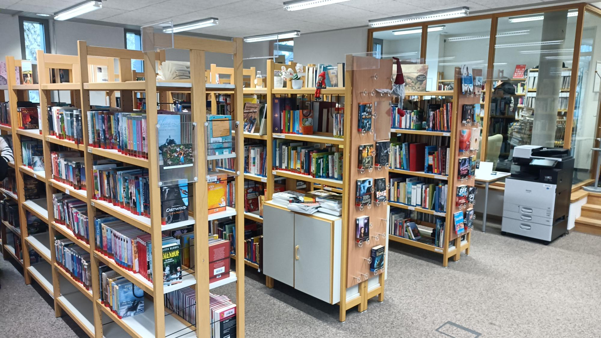

Bibliothek Ag
FES Lörrach
FES Lörrach

Willkommen
Hiii
Wir sind die Bibliothek-AG der Freien Evangelischen Schule (FES) in Lörrach.Wir kümmern uns nicht nur um die Öffnung der Bibliothek am Montag, Mitwoch und Freitag in der 1. Pause sondern auch um Events wie ein Lesewettbewerb für die 5.-8. Klasse oder Projekte wie Dialoge aufnehmen, Kleinbücher schreiben und vieles mehr.
Schau gerne vorbei - wir freuen uns auf dich!
Unsere Buch Empfehlungen für euch ❤️!
Wir kümmern uns nicht nur um die Öffnung der Bibliothek,
sondern veranstalten auch spannende Aktionen für die Klassen der FES.
Die Bibliothek-AG trifft sich jeden Mittwoch um 13 Uhr in der Bibliothek.
Geleitet wird die Bibliotheks-AG von Daniel Kowalsky daniel.kowalsky@fesloe.de
(Autor von mehreren erfolgreichen Buchreihen)
sondern veranstalten auch spannende Aktionen für die Klassen der FES.
Die Bibliothek-AG trifft sich jeden Mittwoch um 13 Uhr in der Bibliothek.
Geleitet wird die Bibliotheks-AG von Daniel Kowalsky daniel.kowalsky@fesloe.de
(Autor von mehreren erfolgreichen Buchreihen)